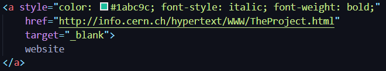
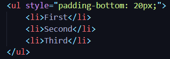
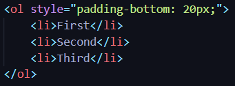

Hypertext Markup Language also known as HTML has developed dramatically over the past 30 years and has
considered to be the standard across all platforms including web pages and applications.
Tim Berners-Lee invented the world wide web in 1989. He was working a nuclear physicist at European Organisation
for Nuclear Research (CERN) and proposed a new hypertext system to share information and documents with physicists
around the world and collaborate with each other. The original document was initially text based with HTML tags
and was published in 1991 which can be found.
HTML 1.0
This version was officially converted into a standard by the IETF (Internet Engineering Task Force) in 1993. The
main purpose was to link texts together such as essays and reports to other texts. HTML 1.0 had very limited
capability which contained approximately 20 elements. Some of these are still being utilised in the current HTML5
which include HEAD, TITLE and BODY which are also present
in this website.
Anchor tags (A) is used to refer to other documents which is described in the
attribute “HREF” which is hosted at a particular domain. This
website
is the first document to be published with HTML 1.0 and is also an example of an anchor tag.

Lists are very helpful in order to display items in an unordered (ul) or an ordered (ol) manner. The unordered
lists were referred to as “multiline paragraphs separated by some white space” and are represented as bullet points while ordered
lists are represented by numbers as shown below.
Unordered List
First
Second
Third

Ordered List
First
Second
Third

Users immediately began to realize the need to display icons and figures on a webpage. They also wanted to
alter page background, change the type of fonts and include tables and forms.
HTML 2.0
This version of HTML was released in 1995 and was a significant improvement from the previous version. It
added new features such as changing the page background, alter fonts and include tables, forms and images
into the webpage. The IMG tag allowed users to share pictures such as the picture of Tim Berners
Lee shown as follows.
A TABLE tag is helps us to organise information into a table using TR to insert table rows
and TD tag is used to insert data into the table cell.
Forms are an interactive way on the website and is mainly used to user input. Some realistic application of
this includes user login, online quizzes and many more. This can also be utilised in a wat to contact the
web developer or author.
During this time, an organisation was created known as The World Wide Web Consortium (W3C) which was responsible for developing web standards. ‘Netscape Navigator’ was a browser created by Netscape which supported many functionalities using Netscape extension tags. These tags looked bad on different browsers and W3C needed to develop their web standard.
HTML 3.2
W3C dropped their work on HTML3 which was to build an unattainable version of the language and began development
on HTML 3.2. The goal of this version was to harmonize content providers and browser developers and was released
in 1996. It provided backwards compatibility with the existing HTML 2.0 standard while deploying features such as
applets, divisions and style.
Applets are discontinued in the current version but has been replaced with the EMBED tag. Divisions
are represented by div and are extensively utilised in the current versions. A div can be
described as a container which can contain other divs or elements. The navigation bar on this website is created
from multiple divisions where the logo is a div inside a bigger div.
This version also introduced text wrap around images which allowed users to display articles with pictures in
a much more desirable way. This has been implemented under the tab HTML 2.0.
HTML 4.01
HTML 4.01 was a redesign of HTML 3.2 which aimed to remove the clutter generated from previous versions. This
version was created in 1999 which included CSS explained in the
next webpage
. This allowed for style sheets which allowed easy access to change the text, colour, font and background.
CSS made it more versatile to change this options in a separate file. The background of this webpage is an
image behind the text.
It added more support for multimedia options, scripting languages and made documents become more accessible
for people with disabilities. It only supported multimedia elements from third party plugins such as
Silver Light and Flash to play audio/video. HTML 4.01 cant handle inaccurate syntax
HTML 4.0.1 marked a “farewell” stance of the W3C. They were done quarrelling and fighting. This final
version opened the HTML language up for other languages, which brought so many spin-offs, that the web
entered its Dark Age.
HTML 5
This version was released officially in 2014 and was a wake-up call for everyone involved in the web
development. W3C was focusing on another language known as XHTML which caused the delay. After long
controversies with different parties, W3C declared the HTML 5 as the new standard and using it is a
commitment.
They introduced the more multimedia tags such as canvas, audio and video.
This allowed for more specific content to be shared.
Many browsers such as Google Chrome, Mozilla Firefox, Opera, Safari and many more have started to
support HTML 5 specification. It makes use of CSS for styling and Java script for manipulating the document
in an effective and efficient way.